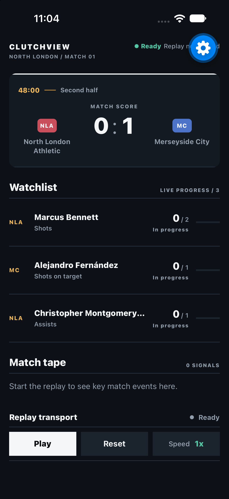

Architecture
How replay, transport faults, domain acceptance, and UI state stay separate.
ClutchView / React Native case study
A React Native match interface that separates event delivery from accepted state. Late, duplicate, and out-of-order events should not become duplicate feedback.
This browser replay is the short version. The mobile app adds disconnect buffering, delayed delivery, duplicates, and reversed event pairs through its Fault lab.
Projection watchlist
Accepted events
No accepted events. Start the fixture.

At the critical moment, the score, player projection, match tape, haptic, animation, and VoiceOver announcement all need to agree. ClutchView triggers that feedback only after the domain accepts the event, not when the transport happens to deliver it.
That one boundary prevents a duplicate packet from becoming a duplicate celebration.
Failure states are part of the product surface, not hidden test scaffolding.
A value-aware component boundary cut projection-row renders by 53% across the deterministic fixture. A render-budget test protects the result.
The documented simulator run held 60 UI and 60 JS FPS in Expo Go development mode. It is evidence for this fixture, not a production-device benchmark.
How replay, transport faults, domain acceptance, and UI state stay separate.
Where AI accelerated the work while engineering judgment stayed human-owned.
ClutchView is a deliberately narrow vertical slice. It has no authentication, wagering flow, or production sports feed. That scope made room to go deep on live-event correctness, accessibility, failure recovery, testing, and measured rendering behavior.
Next: a versioned WebSocket contract, a persisted reconnect cursor, and production-build profiling across representative physical devices.